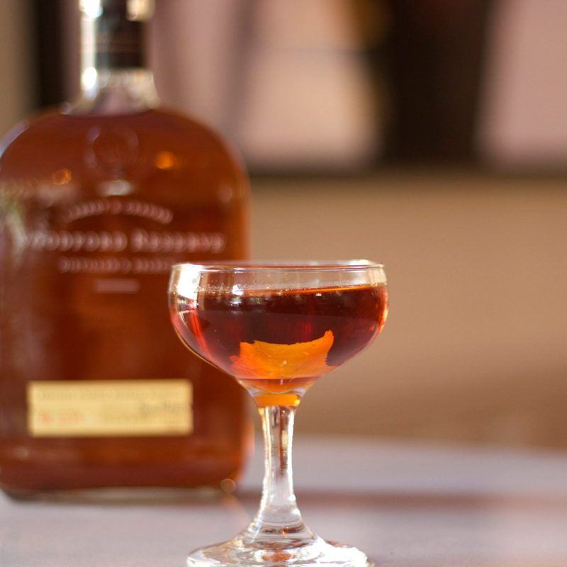

Ingredients
- 2 oz Bourbon
- 1⁄2 oz Demarara syrup
- 3 dashes Angostura bitters
- 2 dashes Orange bitters
Add ingredients to the mixing glass. Add ice to mixing glass and serving glass. Stir ingredients for 30-40 seconds. Strain into serving glass. Garnish with a lightly expressed orange peel.
Ingredients
- 2 oz Bourbon
- 1 oz sweet vermouth
- 1/2 oz Grand Marnier
- 1 dash Angostura bitters
Add ingredients to the mixing glass. Add ice to mixing glass and serving glass. Stir ingredients for 30-40 seconds. Strain into serving glass. Garnish with orange twist and cherry.
